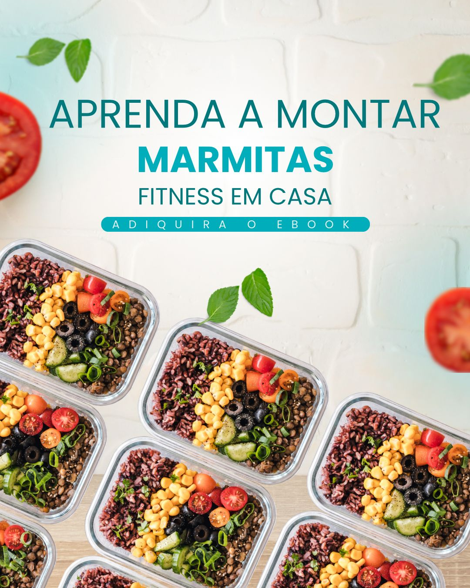

🥗 Guia de Marmitas Fitness em Casa
Economize tempo, coma melhor e transforme sua alimentação com organização e sabor!
Você vive na correria e acaba caindo no delivery? Está cansado(a) de gastar com comida pronta? Esse guia é para você!
O que você vai receber:
- ✅ Passo a passo completo para organizar sua rotina alimentar
- 🛒 Lista de compras inteligente
- ⰠMétodo rápido de preparo (Batch Cooking)
- 🥦 Como montar marmitas saudáveis e balanceadas
- 🧊 Dicas de conservação e congelamento
- 🽠12 receitas fitness exclusivas de almoço e jantar!
Ideal para quem:
- Quer emagrecer ou ganhar massa comendo bem
- Tem pouco tempo e precisa se organizar
- Quer parar de gastar dinheiro com delivery
- Quer comer bem todos os dias sem esforço
🲠Algumas receitas que você vai aprender:
- Frango grelhado com arroz integral e legumes
- Tilápia com purê de batata-doce
- Carne moÃda com quinoa
- Omelete de legumes + salada fria
- Bowl de carne com grão-de-bico
- Frango xadrez + arroz de brócolis
🎁 Bônus Exclusivo:
- 📋 Checklist de Marmitas (PDF)
- 📊 Tabela de substituições para variar as receitas
🔥 Oferta por tempo limitado!
De: R$ 59,90
Por apenas: R$ 29,90
📥 Entrega imediata | 💳 Pagamento seguro | 🔠Garantia de 7 dias
Quero minhas Marmitas Fitness!